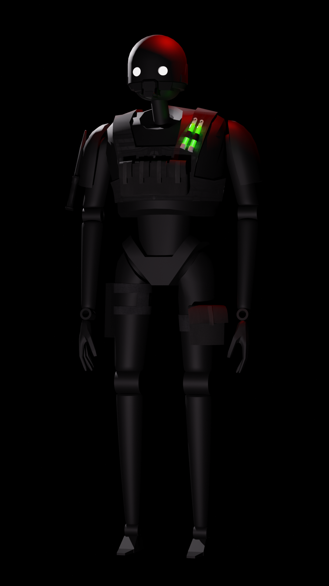

Club Cyberia
Neon environments, underground club visuals, and atmosphere tests.
Grouped collections, environments, experiments, and visual concepts.
Neon environments, underground club visuals, and atmosphere tests.

Dark lounge concepts and red-lit environment experiments.

Subway renders, underground transit scenes, and cinematic lighting.

Stylized low-poly character work inspired by Tyler, The Creator.

The evolving digital mascot, identity system, and visual archive core.